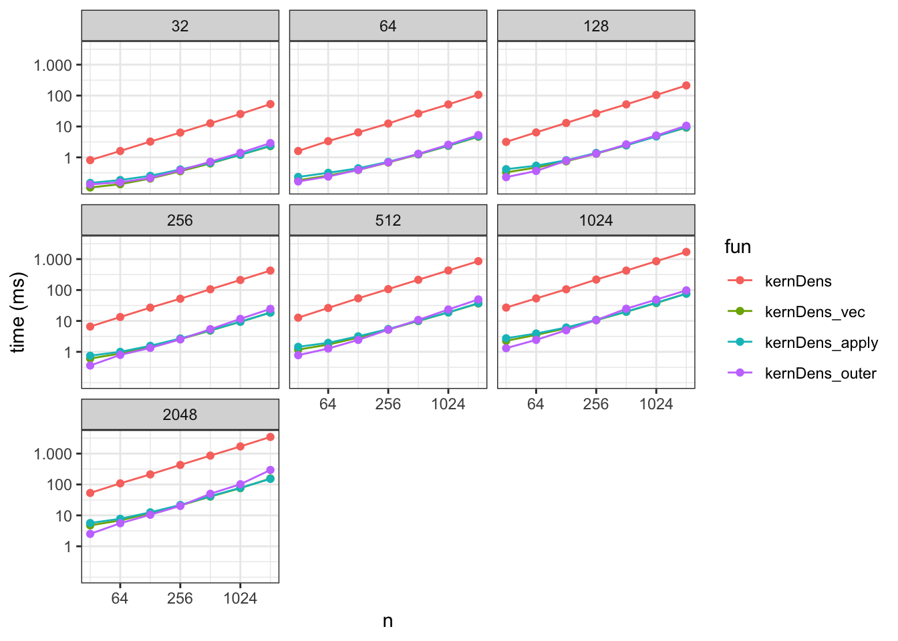

9.1 Stochastic gradient algorithms
Before introducing stochastic gradient descent algorithms it is beneficial to introduce a general framework of objective functions defined via expected loss.
9.1.1
We will consider observations from the sample space \(\mathcal{X}\), and we will be interested in estimating parameters from the parameter space \(\Theta\). A loss function \[L : \mathcal{X} \times \Theta \to \mathbb{R}\] is fixed throughout, and we will be interested in minimizing the expected loss, that is, minimizing \[H(\theta) = E(L(X, \theta)).\] Of course, it is implicitly understood that the expectation is finite for all \(\theta\).
Example 9.1 Suppose that \(X = (Y, Z)\) with \(Y\) a real valued random variable, and that \(\mu(Z, \theta)\) denotes a parametrized mean value depending on \(Z\). Then the mean squared error is defined in terms of the squared error loss as \[\mathrm{MSE}(\theta) = \frac{1}{2} E (Y - \mu(Z, \theta))^2.\] That is, the loss function is the squared error loss \(L((y,z), \theta) = \frac{1}{2} (y - \mu(z, \theta))^2\). From the definition it follows that \[2 \mathrm{MSE}(\theta) = E(Y - E(Y \mid Z))^2 + E (E(Y\mid Z) - \mu(Z, \theta))^2,\] where the first term does not depend upon \(\theta\). Thus minimizing the mean squared error is the same as finding a \(\theta\) with \(\mu(Z, \theta)\) being the optimal approximation of \(E(Y \mid Z)\) in a squared error sense.
Note how the link between the distribution of \(X\) and the parameter is defined in the example above by the choice of loss function. There is no upfront assumption that \(E(Y\mid Z) = \mu(Z, \theta_0)\) for some “true” \(\theta_0\), but if there is such a \(\theta_0\), it will clearly be a minimizer.
The mean squared error is suitable when we model the (conditional) mean of \(Y\). Other loss functions include the “check loss” functions used for quantile regression. The absolute value loss is a special case suitable for modeling the (conditional) median. The example below introduces the log-likelihood loss that is suitable for a parametrized family of distributions.
Example 9.2 Suppose that \(f_{\theta}\) denotes a density on \(\mathcal{X}\) parametrized by \(\theta\). Then the cross-entropy is defined in terms of the log-likelihood loss as \[H(\theta) = - E \log(f_{\theta}(X)).\] Thus the loss function is \(L(x, \theta) = - \log f_{\theta}(x)\)$. If the distribution of \(X\) has density \(f^0\) then \[\begin{align*} H(\theta) & = - E \log(f^0(X)) - E \log(f_{\theta}(X)/f^0(X)) \\ & = H(f^0) + D(f_0 \ || \ f_{\theta}) \end{align*}\] where the first term is the entropy of \(f^0\), and the second is the Kullback-Leibler divergence of \(f_{\theta}\) from \(f^0\). Note that the entropy does not depend upon \(\theta\) and thus minimizing the cross-entropy is the same as finding a \(\theta\) with \(f_{\theta}\) being the optimal approximation of \(f^0\) in a Kullback-Leibler sense.
Within the abstract framework above the objective is to minimize a theoretical
objective function defined, via the expectation operator, in terms of the
distribution of \(X\). In practice, this distribution is unknown and
replaced by a surrogate, most often the empirical distribution of a particular
dataset. That is, we replace \(H(\theta)\) by
\[H_N(\theta) = \frac{1}{N} \sum_{i=1}^N L(X_i, \theta).\]
Minimizing \(H_N\) as a surrogate of minimizing \(H\) has become known as
empirical risk minimization.
Minimizing \(H_N\) with \(N\) fixed is also known as batch learning as opposed
to online learning, which broadly covers algorithms for minimizing \(H\) by
sequentially considering data points one-by-one.
9.1.2 Online stochastic gradient descent
The classical stochastic gradient descent algorithm is an example of an online learning algorithm. It is based on the simple observation that if we can interchange differentiation and expectation then \[\nabla H(\theta) = E \nabla_{\theta} L(X, \theta),\] thus if \(X_1, X_2, \ldots\) form an i.i.d. sequence then \(\nabla_{\theta} L(X_i, \theta)\) is unbiased as an estimate of the gradient of \(H\) for any \(\theta\) and any \(i\). With inspiration from gradient descent algorithms it is natural to suggest stochastic parameter updates of the form \[\theta_{n + 1} = \theta_n - \gamma_n \nabla_{\theta} L(X_{n+1}, \theta_n)\] starting from some initial value \(\theta_0\). The (deterministic) sequence of step size parameters \(\gamma_n \geq 0\) are known collectively as the learning rate.
From the above result, convergence of the algorithm is guaranteed if the learning rate, \(\gamma_n\), converges to 0 but does so sufficiently slowly. The precise way that the learning rate dacays is known as the decay schedule, and a three-parameter family of decay schedules that satisfy the conditions above is given by \[\gamma_n = \gamma_0 \frac{K}{K + n^a}\] for some initial learning rate \(\gamma_0 > 0\) and constants \(K > 0\) and \(a \in (0.5, 1]\). The following example of online Poisson regression illustrates the general ideas.
Example 9.3 In this example \(Y_i \mid Z_i \sim \mathrm{Pois(e^{\beta_0 + \beta_1 Z_i})}\) for \(\beta = (\beta_0, \beta_1)^T\) the parameter vector. For the sake of generating \(Z_i\)-s we will let them be uniformly distributed in \((-1, 1)\), but this assumption plays no role otherwise.
The conditional mean of \(Y_i\) given \(Z_i\) is \[\mu(Z_i, \beta) = e^{\beta_0 + \beta_1 Z_i}\] and we will consider the squared error loss as well as the log-likelihood loss. First, we observe that \[\nabla \mu(Z_i, \beta) = \mu(Z_i, \beta) \left( \begin{array}{c} 1 \\ Z_i \end{array} \right),\] which for the squared error loss gives the gradient \[\nabla \frac{1}{2} (Y_i - \mu(Z_i, \beta) )^2 = \mu(Z_i, \beta) (\mu(Z_i, \beta) - Y_i) \left( \begin{array}{c} 1 \\ Z_i \end{array} \right).\] For the log-likelihood loss we find the gradient \[\nabla \left[ \mu(Z_i, \beta) - Y_i \log(\mu(Z_i, \beta)) \right] = (\mu(Z_i, \beta) - Y_i) \left( \begin{array}{c} 1 \\ Z_i \end{array} \right).\]
To clearly emulate the online nature of the algoritm, the implementation below generates the observations sequentially in the for-loop.
N <- 2000
beta = c(2, 3)
mu <- function(z, beta) exp(beta[1] + beta[2] * z)
beta_SE <- vector("list", N)
beta_LL <- vector("list", N)
gamma0 <- 0.0002
gamma1 <- 0.02
K <- 100
beta_SE[[1]] <- beta_LL[[1]] <- c(1, 1)
for(i in 2:N) {
## Data
z <- runif(1, -1, 1)
y <- rpois(1, mu(z, beta))
## Decay schedule update
schedule <- K / (K + i)
## Squared error update
mu_old <- mu(z, beta_SE[[i - 1]])
beta_SE[[i]] <- beta_SE[[i - 1]] -
gamma0 * schedule * mu_old * (mu_old - y) * c(1, z)
## Log-likelihood update
mu_old <- mu(z, beta_LL[[i - 1]])
beta_LL[[i]] <- beta_LL[[i - 1]] -
gamma1 * schedule * (mu_old - y) * c(1, z)
}
beta_SE <- cbind(as.data.frame(do.call(rbind, beta_SE)),
data.frame(iteration = 1:N, loss = "squared error"))
beta_all <- rbind(
cbind(as.data.frame(do.call(rbind, beta_LL)),
data.frame(iteration = 1:N, loss = "log-likelihood")),
beta_SE)
colnames(beta_all)[1:2] <- c("beta0", "beta1")
9.1.3 Stochastic gradient descent
A characteristic of most online algorithms is that they don’t store data and any data point is used once and then forgotten.